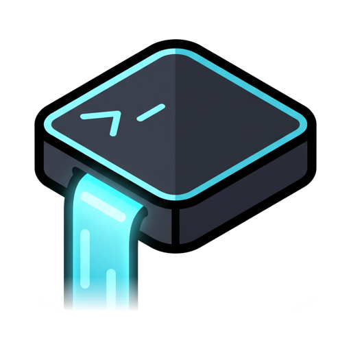

Queued for later. Send a card here from its document, and back to the board when its time comes.
Archive
0
Finished and retired cards. Everything keeps its markdown; restore brings one back to To do.

Flow
A tool for product builders and vibe coders, to stay in the flow.
Welcome to Flow
A board where cards become live agent sessions. Three steps to
your first one:
Add a project, any local repo
Write a card for something you want built
Drag it into Doing and talk to the session that opens
Settings
Name unsavedWhat this project is called everywhere in Flow. The folders on disk keep their own names. Save below to apply.
Icon
A square image, worn at the squircle crop beside the project's name. Applies straight away.
FilesWhere this project's cards and docs are saved — every board column is a folder of markdown files you can open in anything.
Remove projectTakes this project out of Flow's list. Nothing is deleted — the repo and the board folder stay on disk exactly where they are, and adding the folder again brings it back.
On this MacShape, Draft, Research and Review spawn these CLIs. They do not connect to a Claude or Codex app. A missing required row is why those buttons sit on “Asking Claude” and never finish.
Default terminal commandThe CLI every session launches — cards, the board terminal, the docs terminal. A command name like claude or codex, or a full path to a script. A card's session launches it on open so the agent sits ready; prompts are only ever pasted for you to send. Empty means claude.
Shaping
Model commandHow Shape starts the model — a CLI and its flags, e.g. claude -p. The model, prompt and streaming flags are appended. Empty means the default.
ModelThe claude model shaping runs on — haiku is the default and keeps shapes near-instant; sonnet writes richer plans. Wins over any --model in the command above. Emptying the field restores the default.
Shaping promptThe instructions Shape sends. The card's title, its context and a glance at the repository are appended after this, whatever it says. Restoring the default is emptying the field and saving.
Starting a task
Start prompt[card-path], [task-name] and [project-name] are substituted when Start work fires. Restoring the default is emptying the field and saving.
Active sessionsTerminal sessions running in tmux, across every project — they survive reloads and project switches. End one to free it.
Clean up
or end sessions older thandays
Ending a session stops its tmux session and whatever is running inside it. Cards, docs and everything on disk stay exactly where they are.